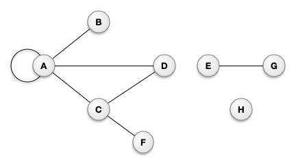
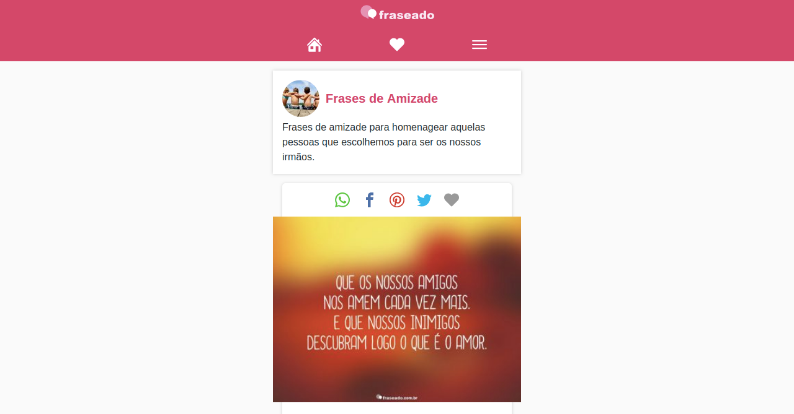

UOLTalk
O que é o UOLTalk?
São reuniões periódicas, apresentando conteúdos relevantes para o nosso dia a dia.
Os objetivos do UOLTalk são:
- compartilhar conhecimento
- padronizar código
- evoluir equipe
Grafos / Neo4j
O que abordaremos?
- Teoria dos grafos
- Nós/vértices
- Arestas/relações
- Grafos no nosso dia a dia
- Banco de dados em grafos
- Linguagens de consulta (Cypher, apis, etc.)
- NEO4J
- Cypher (CQL)
- O que fizemos até aqui?
Teoria dos Grafos
A teoria dos grafos é uma parte da matemática
que estuda as relações entre os objetos
de um determinado conjunto.
Grafos em sua estrutura tem o que
chamamos de nós ou vértices.
Também temos as arestas que são as relações entre um nó e outro ou a ele mesmo.

Representação gráfica:
Vamos pensar no nosso dia a dia,
o que podemos utilizar grafos?


Banco de dados em Grafos
Um banco de dados utiliza da estrutura em grafos para consultas semânticas com nós e arestas.
É um modelo de banco de dados
não relacional (NOSQL).
Para recuperar dados em um banco feito
em grafo é necessário uma linguagem de
consulta diferente de SQL. Mas não existe
uma linguagem padrão adotada.
Existem algumas linguagens para consultas de banco de dados em grafos, por ex:
Gremlin, SPARQL, CYPHER, etc...
Representação gráfica:

Existe a possibilidade das consultas
serem realizadas por APIS.
Uma bem popular é a GRAPHQL,
que foi criada pelo Facebook.

Um grande ponto positivo de banco de
dados em grafos é porque ela não pesquisa
dados irrelevantes em suas consultas,
sendo muito vantajoso para pesquisas
de big data em tempo real.

NEO4J
É um sistema de gerenciamento de banco de dados em grafo, desenvolvida
pela empresa NEO4J INC.
Neo4j utiliza Cypher Query Language (CQL)
O que fizemos até aqui com neo4j e grafos?
Listagem dos componentes do v3:
Grafos da listagem:
Página do componente:

Grafos da página do componente:

Projeto pessoal :)
Grafos projeto pessoal :)

Referências